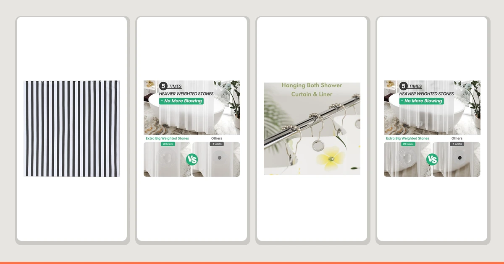

Things to Know Before You Buy
- Moisture is the real enemy. Mildew needs a damp, soap-coated surface to grow, so most of the work is helping your liner dry faster.
- Airflow matters as much as scrubbing. A bathroom that stays humid for hours grows mildew no matter how often you clean the liner.
- A weekly spray beats a monthly scrub. Light, frequent maintenance stops stains before they bond to the plastic.
- Liners are cheap and replaceable. When one stops coming clean, a $9 swap is faster than fighting set-in mildew.
Learning how to prevent shower curtain mildew starts with managing moisture, not chasing mold spores. Mildew is a surface mold that feeds on the thin film of soap, body oil, and hard-water minerals your shower leaves on the liner. Give that film a few damp hours in a warm bathroom and you get the pink and black speckling that creeps up from the hem.
You do not need harsh chemicals or a new bathroom fan to fix this. The five steps below take a few minutes a day plus one wash a month. Follow them and your liner stays clear for months instead of weeks, and your bathroom loses the musty smell that no air freshener covers.
What You'll Need
- Supplies: White vinegar, baking soda, mild laundry detergent
- Tools: Bathroom exhaust fan, spray bottle, microfiber cloth
Step 1: Stretch the curtain out after every shower
The single most effective way to prevent shower curtain mildew costs nothing: spread the curtain out the moment you step out. When you leave it bunched at one end, the folds hold pools of water against themselves for hours. Those shaded, damp creases are exactly where mildew starts.
Pull both the decorative curtain and the inner liner all the way across the rod so the full surface meets the air. Smooth rings help here, since a liner that drags or sticks tends to get shoved into a clump. If your hooks catch, a set of double-glide rings makes the daily stretch automatic.
Give the bottom hem a quick shake to knock off the heaviest drips. The hem is the lowest, least ventilated part of the liner, and it is almost always where the first black spots show up.
Step 2: Run the fan and air out the bathroom
Cleaning alone will not prevent shower curtain mildew if the room stays humid all day. Mildew grows fastest in still, warm, wet air, and a closed bathroom after a hot shower is the perfect incubator. Your job is to clear that humidity fast.
Switch on the exhaust fan before you start the water and leave it running for 20 to 30 minutes after you finish. No fan? Crack a window or leave the door open so the moist air has somewhere to go. A small clip-on or plug-in fan pointed at the curtain works too, and it dries the liner in half the time.
You can check whether your ventilation is doing its job with the mirror. If the bathroom mirror is still fogged 15 minutes after your shower, the room is holding too much moisture and your liner is sitting wet.
Step 3: Spray the liner down once a week
A weekly spray is what keeps shower curtain mildew from ever taking hold. Mix equal parts white vinegar and water in a spray bottle and keep it on the shelf. Once a week, mist the inside of the liner from top to bottom, paying attention to the lower third where film collects.
Vinegar cuts through the soap scum and mineral deposits that mildew uses as food, and it leaves a mildly acidic surface that spores struggle to colonize. Let it sit for a few minutes, then run a microfiber cloth along the hem and any spots that look cloudy. For a stubborn film, sprinkle a little baking soda on the damp cloth for gentle scrubbing power.
This habit takes about three minutes and stops stains while they are still invisible. Skip it for a month and you move from wiping to scrubbing, which is slower and harder on the plastic.
Step 4: Machine-wash the curtain and liner monthly
Once a month, take everything down and run it through the washing machine. Most plastic and PEVA liners are machine washable, and a deep clean resets the surface so your weekly sprays keep working. This step does the heavy lifting that prevents shower curtain mildew from ever getting a foothold.
Wash the liner on a warm, gentle cycle with your normal detergent plus half a cup of baking soda. Add a couple of old towels to the load. The towels scrub the plastic as everything tumbles, which lifts soap film far better than detergent alone. For the first rinse, pour in a cup of white vinegar to dissolve mineral buildup.
Do not put a plastic liner in a hot dryer, since the heat warps and cracks it. Hang it straight back on the rod dripping wet and let it air dry, fully stretched out. A fabric curtain can usually go in the dryer on low, but check the care tag first.
Step 5: Replace the liner when stains stop lifting
Even a well-kept liner wears out. Once vinegar and a monthly wash stop bringing it back to clear, mildew has worked into scratches and seams where you cannot reach it. At that point the worn liner reseeds spores onto your clean fabric curtain faster than you can scrub them off.
A replacement liner runs about $9 to $12, so there is little reason to fight a lost cause. Watch for three signs it is time: stains that survive a wash, a musty smell that returns within a day, and a stiff, brittle feel where the plastic has degraded. Any one of these means the liner is now a source rather than a surface.
When you buy a new one, a heavier liner with weighted or magnetic hems pays off. It clings to the tub wall instead of billowing, dries flatter, and gives mildew fewer damp folds to hide in. That small upgrade makes the other four steps easier to keep up.
Common Mistakes to Avoid
The most common mistake is leaving the curtain bunched at one end of the rod. It feels tidy, but those folds trap water for hours and become the first place mildew grows. Spreading the liner flat takes two seconds and undoes most of the damage. People also forget the liner entirely and wash only the pretty fabric curtain, when the plastic liner is the part that touches the water and grows the mold.
Another mistake is reaching for straight bleach at the first spot. Bleach can lighten a stain, but it weakens plastic liners and the fumes are rough in a closed bathroom. Vinegar and baking soda handle routine mildew without that cost, so you can save the bleach for a liner you are about to throw out anyway. Skipping ventilation is just as common. You can scrub all you want, but if the room stays humid for hours after every shower, you are preventing shower curtain mildew with one hand and feeding it with the other.
Finally, do not put a plastic liner in a hot dryer to speed things up. The heat warps the material and cracks the surface, and those cracks give mildew new places to settle that you can never fully clean. Air drying on the rod is slower by an hour and far kinder to the liner.
Our Top Picks
The right gear makes this routine easier to keep up. These three picks cover the parts of the job that matter most: a liner that dries flat, hooks that let you stretch it out fast, and a budget set if you are starting from scratch.

Editor’s Pick
Amazon Basics Complete Bathroom Set
If you are setting up from zero, this set pairs a water-repellent curtain with rust-resistant rings for under $20. The curtain wipes down easily and machine washes, which makes the weekly and monthly steps painless.
$19.62
Check Price on Amazon
Best Value
AmazerBath Frosted Shower Curtain Plastic
At $11.99, this frosted PEVA liner is the workhorse of the whole routine. The wipe-clean surface shrugs off soap film, and the weighted hem keeps it from billowing and folding, the two things that breed mildew.
$11.99
Check Price on Amazon
Premium Choice
Amazer Shower Curtain Hooks Decorative
Smooth hooks sound minor until you realize a sticky rod is why your liner ends up bunched and wet. These glide easily, so stretching the curtain out to dry becomes a one-second habit instead of a chore.
$5.21
Check Price on AmazonFrequently Asked Questions
How do I prevent shower curtain mildew without harsh chemicals?
Focus on moisture and a weekly vinegar spray. Spread the liner out to dry after each shower, run the fan for 20 to 30 minutes, and mist the liner with a 50/50 white vinegar and water mix once a week. Vinegar and baking soda handle routine mildew without bleach.
How often should I wash my shower curtain liner?
Wash a plastic or PEVA liner in the machine about once a month, sooner if you see film building up. Use warm water, your normal detergent, half a cup of baking soda, and toss in a couple of old towels to scrub the plastic as it tumbles.
Can I put my shower curtain liner in the dryer?
Skip the dryer for plastic and PEVA liners. The heat warps and cracks the material, and the cracks give mildew new places to hide. Hang the liner back on the rod wet and let it air dry fully stretched out instead.
Does a vinegar spray really stop mildew?
Yes, for prevention and light stains. Vinegar dissolves the soap scum and mineral film that mildew feeds on and leaves an acidic surface spores struggle to grow on. It will not bleach out old, set-in black stains, which is your signal to replace the liner.
When should I replace my shower curtain liner instead of cleaning it?
Replace it once stains survive a wash, a musty smell comes back within a day, or the plastic feels stiff and brittle. At that point mildew has worked into scratches you cannot reach, and a fresh $10 liner is faster than fighting it.
Verdict
Knowing how to prevent shower curtain mildew comes down to a routine you can actually keep: stretch the liner out to dry after every shower, ventilate the room until the mirror clears, spray the liner with vinegar once a week, wash everything monthly, and replace the liner when stains stop lifting. None of it takes special skill or harsh chemicals, and the daily steps add up to a few minutes. The payoff is a liner that stays clear for months and a bathroom that loses its musty edge. Also, upgrade your bathroom faucet to match your new curtain. Also, upgrade your soap dispenser to match.
If you want to make the habit stick, start with the gear. The Amazon Basics Complete Bathroom Set gives you a wipe-clean, machine-washable curtain and rust-free rings for under $20, which removes most of the friction from the weekly and monthly steps. Pair it with a weighted liner and smooth hooks, and the four maintenance steps take almost no effort to keep up. Give the routine a month and the black spots simply stop coming back.